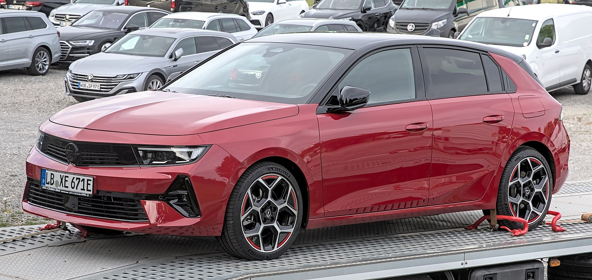
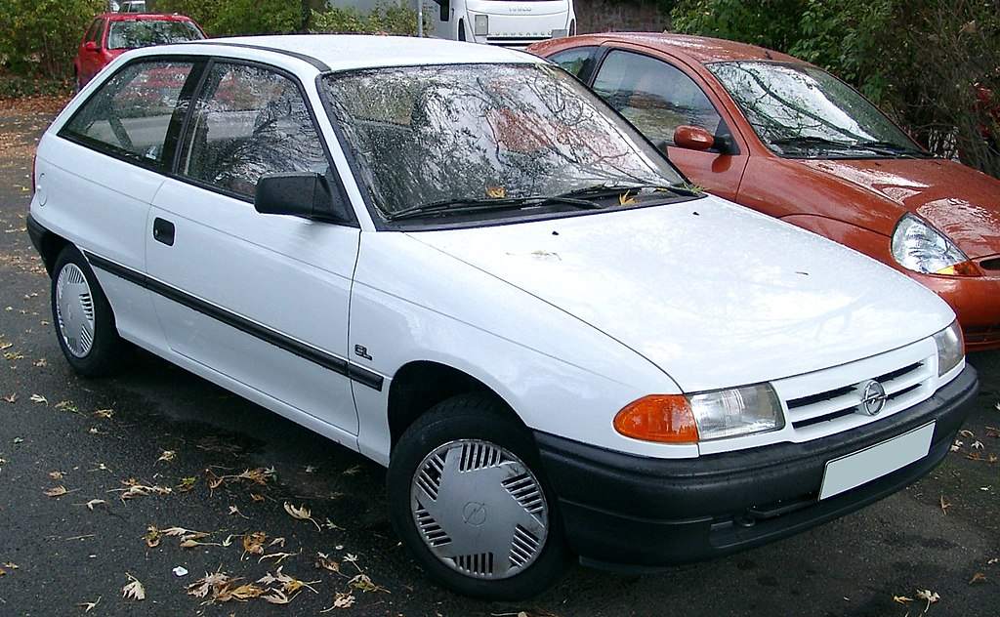
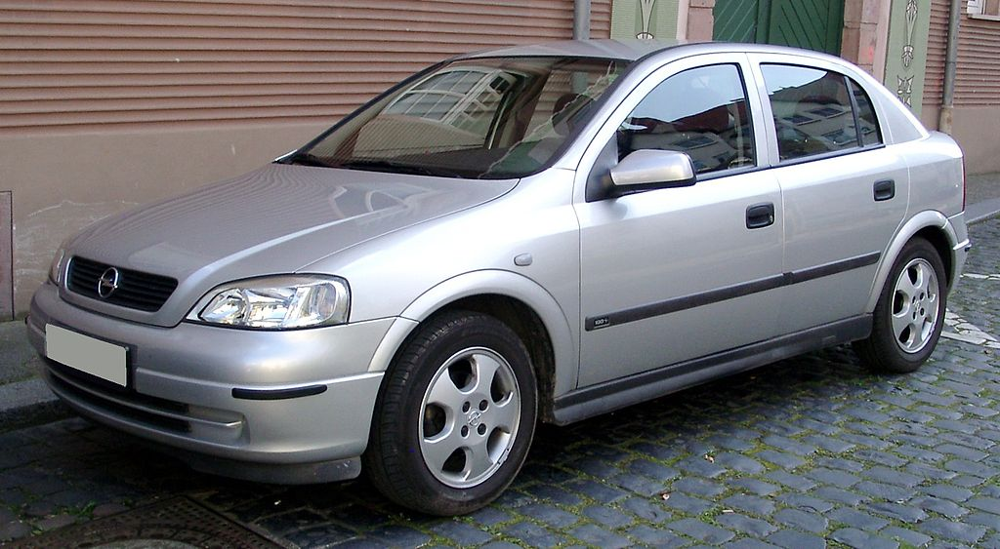
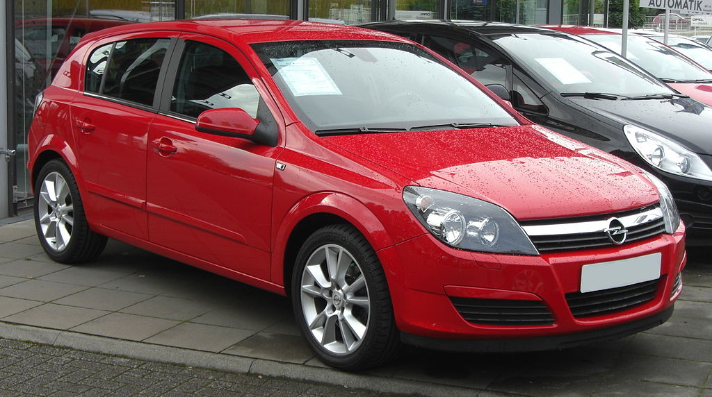
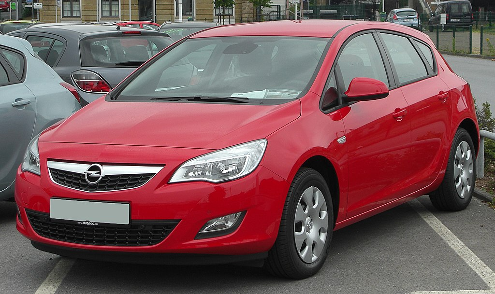
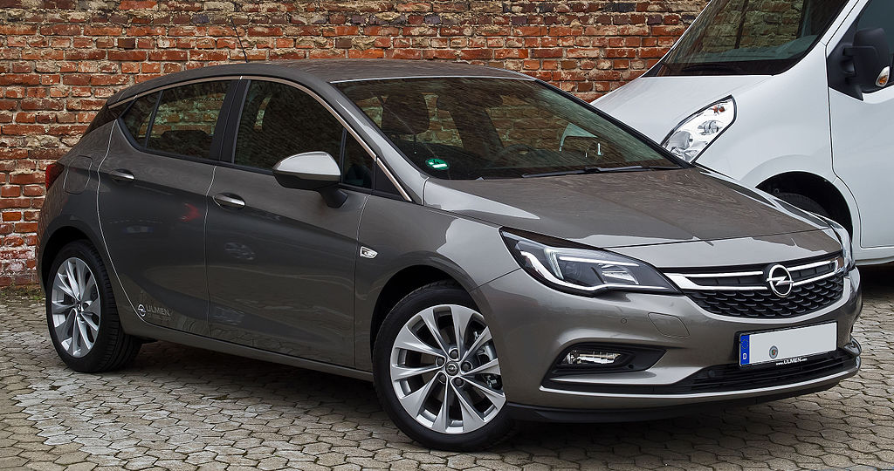
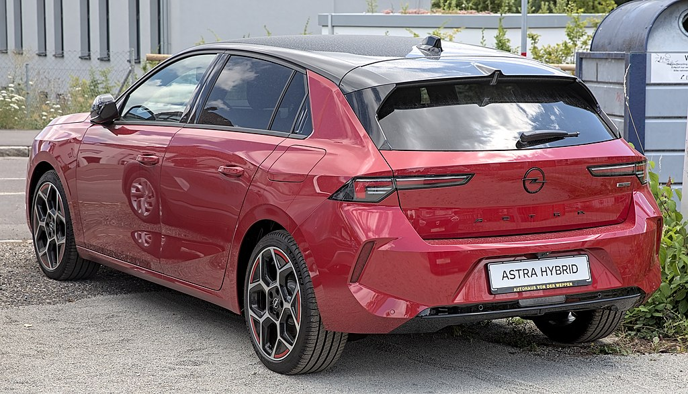

Opel Astra

Opel Astra (укр. Опель Астра) — сімейство компактних автомобілів, що виробляються німецькою компанією Opel. Вони виготовляються з 1991 і прийшли на зміну компактним автомобілям Opel Kadett.
Opel Astra F (1991-1998)
У 1991 році на автосалоні у Франкфурті, компанія Opel показала свою нову модель Astra F. Opel Astra першого покоління пропонувала широку гаму модифікацій, що складається з двох хетчбеків, седана, універсалу "Caravan" і його комерційної 3-дверної версії для перевезення вантажів - "Astravan". Тоді ж дебютували і дві спортивні модифікації: GT і GSI. Всі автомобілі стали оснащувати гідропідсилювачем керма, і пиловим фільтром салону. Стали доступними такі опції як кондиціонер, подушка безпеки пасажира, і шкіряний інтер'єр.
В 1993 році гаму авотомобілей Astra розширили за рахунок нового чотиримісного кабріолета, і універсала "Caravan" c 16-ти клапанним двигуном X20XE.
У 1994 році автомобіль піддали рестайлінгу і трохи змінили його зовнішність. Було покращено якість обробки салону, в рульовому колесі з'явилася подушка безпеки, Екстер'єр рестайлінгових Astra відрізнявся новою фальшрадіаторною решіткою, фарами, дзеркалами, ручками дверей і новими колісними дисками. Автомобілі отримали чотириступінчастий «автомат» японської фірми Aisin, газонаповнені амортизатори замість масляних, а також поліпшену антикорозійну обробку.
Після закінчення випуску моделі в Німеччині, випуск Astra F в бюджетних модифікаціях продовжували на заводі GM Manufacturing Poland в Польщі, під назвою Astra Classic до 2002 року.
Opel Astra G (1998-2004)
У 1997 році, на черговому автосалоні у Франкфурті вперше було представлено друге покоління Astra, воно отримало індекс G. Примітно те, що від попередниці не було взято жодної важливої деталі, це був заново спроектований автомобіль. Основні поліпшення нового покоління торкнулися ергономіки, ходових якостей, функціональності, якості обробки інтер'єру.
Opel Astra G пропонувалася з трьома типами кузовів: два хетчбека і універсал. Седан з'явився тільки через рік. Кузов нової моделі відрізнявся відмінною аеродинамікою, а також значно зросла його міцність. Безпека забезпечують ремені безпеки, чотири подушки безпеки (дві фронтальні і дві бічні - (опція), заховані в спинках передніх сидінь). На замовлення було можливо отримати 6 подушок безпеки (додаткові шторки Air bag в даху).
У 1999 році на базі Astra в дизайнерському ательє Bertone була створена нова версія автомобіля з кузовом купе. У 2001 році на базі цього автомобіля була випущена ще одна модель - Opel Astra Cabrio. Обидві модифікації, незважаючи на порівняно невисоку ціну, є ексклюзивними, тому що вони збиралися вручну на заводі Bertone.
На цій моделі з 2000-го року, вперше можна було побачити роботу OPC (Opel Perfomance Center), яка почала випуск доопрацьованих автомобілів з турбованим двигуном Z20LET з 2000-2002 роки, а з 2002-2004 випускався рестайлінгова Astra G OPC.
У 2002 році модель оновили.
Випуск другого покоління Opel Astra був припинений в 2004 році.
Після закінчення випуску моделі в Німеччині, виробництво Astra G продовжували на заводі "GM Manufacturing Poland" у Польщі, в кузові хетчбек, седан i універсал під ім'ям Classic II до 2009[1] року, і в Україні, на заводі "ЗАЗ" в м. Запоріжжя, - по жовтень 2008 року.
Opel Astra H (2004-2010)
Третє покоління Астри дебютувало в 2004 році у вигляді п'ятидверного хетчбека і універсала, а протягом наступних декількох років на ринок вийшли трехдверка GTC, седан, кабріолет. Машина була побудована майже з нуля і базувалася на платформі Delta, яку також використовували Opel Zafira, Chevrolet Cobalt, Chevrolet HHR і деякі інші моделі концерну GM. Седан додав в довжині, вимахнув до 4587 мм (відстань між осями - 2703 мм). Astra H домоглася першого місця продажів в Європі в 2007 році, а роком пізніше вийшла на ринок США під брендом Saturn. На модель встановлювали чотирициліндрові мотори робочим об'ємом до 2,4 л і потужністю до 240 сил (версія OPC). Залежно від двигуна можна було отримати «механіку» з п'ятьма або шістьма ступенями, п'ятиступінчастий «робот» Easytronic або «автомат» з чотирма або шістьма діапазонами. У цьому поколінні Astra обзавелася статусним обладнанням - електронно-керованими амортизаторами і біксеноновими фарами з інтелектуальним керуванням. Автомобілі в європейській специфікації припинили випускати в 2010 році, а в Бразилії - у 2011-му.
Opel Astra J (2009-2015)
Opel Astra J дебютувала в 2009 році на Франкфуртському автосалоні. Автомобіль заснований на платформі концерну General Motors Delta II. Astra була розроблена в європейському дизайн-центрі Opel в Рюссельсхаймі, продовжує еволюцію мови дизайну Opel, «скульптурний артистизм з німецькою точністю» вперше представлений на Insignia.
Opel Astra посів третє місце в конкурсі Європейський Автомобіль Року в 2010 році.
5 грудня 2009 року на ринок вступив п'ятидверний хетчбек, універсал Sports Tourer з'явився в середині 2010 року, купе GTC на початку 2011 року, а фотографії седана з'явиться 10 лютого 2012 року.
7 березня 2012 року на Женевському автосалоні була представлена найшвидша версія OPC. Продажі почалися восени 2012 року.
У червні 2012 року були показані остаточні фото седана. Готова версія була показана на Московському автосалоні 2012 року.
Opel Astra K (2015-2021)
Opel Astra K збудована на новій платформі D2XX і дебютувала в 2015 році на автосалоні у Франкфурті. Крім звичайних версій хетчбека і універсала мав з'явитися кросовер Astra Country Tourer. Базовим є 1.0 літровий бензиновий турбодвигун потужністю 105 к.с. далі йде бензиновий двигун 2.0 л Ecotec потужністю 125 або 150 к.с. У гамі також є дизельні і бензинові двигуни 1.6 л потужністю від 95 до 200 к.с. Топовий варіант OPC обладнають 1.6 л турбонадувом з віддачею 280-285 к.с. Вперше в класі як опцію для Opel Astra запропонували матричні світлодіодні фари. Крім того, в списку обладнання - системи автопарковки, попередження про зіткнення або аварійної ситуації (OnStar).
Збірку моделі налагодили на заводах компанії у Великій Британії та Польщі. У продаж в Європі новинка надійшла наприкінці 2015 року.
У 2020 було оновлено лінійку двигунів Opel Astra. Автомобіль доступний у трьох комплектаціях: Essentia, Enjoy і Cosmo. Базова варіація Essentia 2020 оснащена 1.2-літровим бензиновим двигуном на 110 к.с. і шестиступінчастою механічною КПП. Enjoy пропонує бензиновий силовий агрегат об'ємом 1,4 л і потужністю 145 к.с. в парі з семиступінчатим варіатором. Модель в комплектації Cosmo обладнана 1,5-літровим 122-сильним дизельним мотором і дев'ятиступеневою автоматичною трансмісією. Opel Astra 2020 року доступний тільки з системою переднього приводу[2].
Opel Astra L (з 2021)
13 липня 2021 року представили нове покоління Astra L. Автомобіль розроблено на попередній платформі EMP2, що й Peugeot 308, з новим корпоративним дизайном.
На європейський ринок новий хетчбек Astra L надійде в першій половині 2022 року. Трохи пізніше до нього повинен приєднатися універсал.